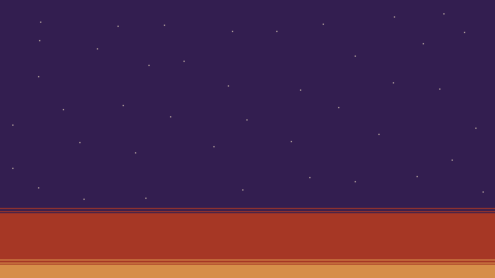

Alright, everyone, time to show off! Share/comment with something you're proud of having done this past year, big or small!

- They/Them
- mokkograd.net/
After I learned everything there is about the human bone, I decided it would be more fun to blow up digital worlds.
things to get in touch/places to find me:
mokkograd at gmail
Discord
mokka69420
Email Newsletter
buttondown.com/MOKKOGRADMy Steam Developer Homepage
store.steampowered.com/developer/mokkogradMy itch.io page
mokka.itch.io/twitter (in case people really want to, only for game announcements though)
twitter.com/mokkograd
in reply to @hthrflwrs's post:
Landed a full-time software dev role after graduating college.

I finally moved out to live on my own after trying to for years and now I'm back to socializing and already finished making a new game 🙌
I've done a bunch of oc writing, but most of my progress this year was in my job and personal life. Got engaged!! 💜 Still alive! Still kickin!

left a company i hate for a company i can be proud of. became part of a cohost demogroup(???) and built a weird emulator streaming service out of 90s-ish web tech that folks seemed to enjoy. and honestly, gotta also give myself some credit for simply making it through the absolute clusterfuck this year has been
Mainly advancements in my personal life; finally got my driver's license and had my first real job throughout the summer. Though I also decoded an animation format from the 90s by myself, and made significant progress on a GBC romhacking project.
Got my hypnotherapy certification! Which it turns out I'm probably not going to make the basis of a new career but: I actually took the action, after thinking about it/wishing I had some better idea for a new career for like eight years.
As a side note, also got hypnotherapy myself and shed about 30 pounds of a lifelong weight problem. This doesn't feel so much like something to be proud of as something else that I should have done years ago/kinda happened to me because I finally found the money and willingness to give it a shot. But I found that willingness! Action has magic power and grace, live laugh love &etc

I went from knowing nothing about programming to where I am now. I feel like I've recovered a little bit from 2020, but still some more steps I need to take. Sent over 700 applications this year to no avail --
Really hope to get a job as a software dev in the coming year!
I put together a transpiled programming language with a flexible, handmade toolchain, meaning I can code with features I wrote myself. I'd say that's pretty cool.
Oh yeah, and I'm finally learning to drive. That's also really important.

Honestly This Graphic is probably my Thing I Did of the Year https://twitter.com/masklayer/status/1550787014903169024
I wrote 325k words so far of fluffy slice of trans fiction, of which ~87k were in November for NaNoWriMo for a novel that I’m still a few thousand words from finishing the draft of… I still debate what good any of it does or is, but… I hadn’t been able to sit down and just write in a long time because of various blocks in my head I finally shoved aside… also 200k of them are on the website in my bio, for better or worse, with another story at least to be posted before the end of the year

I did a lot of self reflection, worked through difficult emotional issues, had a bunch of existential crises, and after lots of consideration I followed my own conviction despite getting a bunch of opposing advice from other people. And it ended up being the right thing, as far as I can tell right now.


Quitting my horribly abusive job. I may not have a job anymore, but i have better mental health.

I finished my masters degree, survived and climbed back out a major OCD relapse, and reconnected with a friend.
Organized and ran a DEFCON village talk track that was incredibly smooth all weekend long. This lead me to solidify my career aspirations and realize my job was holding back my career. I just accepted a new position and will leave this company with just shy of 15 years.
I’m proud of who I’ve been developing into over the past year!
it's gotta be that essay on transmisogyny i wrote, i'm still extremely proud of how that turned out and how many beings have come to me saying it was helpful
my band released an album in september:


Don't have much to show for it. But i finally tried writing again, and now i have about 80 pages of Neo TWEWY fanfic written, as a result of nearly unbroken streak of writing page a day (or more).
In january, i'll try to build up courage to share it online, but i'm absolutely terrified by that. Wish me luck ._.
I started making stuff out of leather and made some pretty cool stuff!
https://cohost.org/Hunter-JE/post/565869-i-taught-myself-leat
I finally started HRT after what felt like an eternity, and it is the best thing that ever happened to me. It's been a few weeks, but I still get giddy and/or start crying every day when I realize that being alive feels good now.
Started Perler commissions after putting it off for two years: https://cohost.org/EchoCian/post/516416-hattori-hanzo-perler https://cohost.org/EchoCian/post/484403-introduction
Also got my GED so I can go to college because a high school correspondence course wasn't good enough for them.

Near the beginning of the year I finished remastering a 30 year old ZZT world with the blessing of the original author.
Later, I spent 5 months painstakingly making a complete disassembly of an old Game Boy game. Considering that I had been meaning to do that for several years (and had multiple prior attempts where I burnt out), it felt extremely gratifying to finally finish that project.
Started being artistically active after a fallow couple of years and released 4 pieces of poetry/games!

Pinned Tags
Private Note
Only you can see this